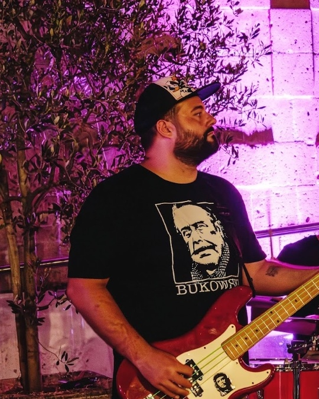

Consigliata · Antonio Centrato & Batterista Sfumato
Antonio Centrato con Effetto Bokeh
Antonio (viso, cappellino, maglia Bukowski e basso rosso) rimane 100% nitido, mentre il batterista, piatti e fusto della batteria sullo sfondo sono sfumati dolcemente con effetto profondità di campo.

Solo Ritaglio Centrato
Antonio Centrato (Senza Sfumatura)
Ritaglio centrato su Antonio ma con il batterista e i piatti ancora a fuoco nello sfondo a destra.